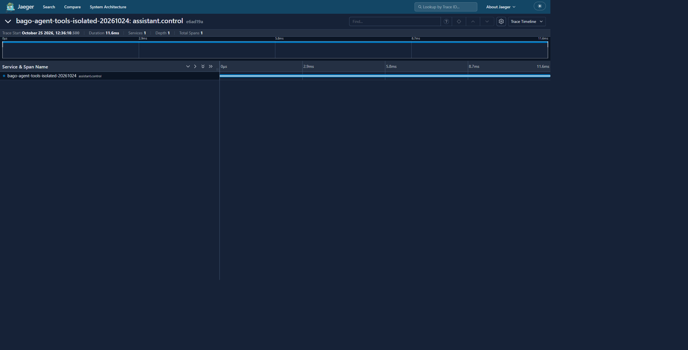

BAGO ADL · Capturas documentadas
25 de octubre de 2026. Cuatro capturas de Jaeger y una vista del historial legacy antes de su corrección. Cada imagen tiene un alcance propio; no acredita una misión completa ni una suite verde.

Las imágenes PNG son las capturas originales. El GIF de portada es una composición mecánica reducida de estas mismas cinco imágenes. Procedencia, hashes y límites.